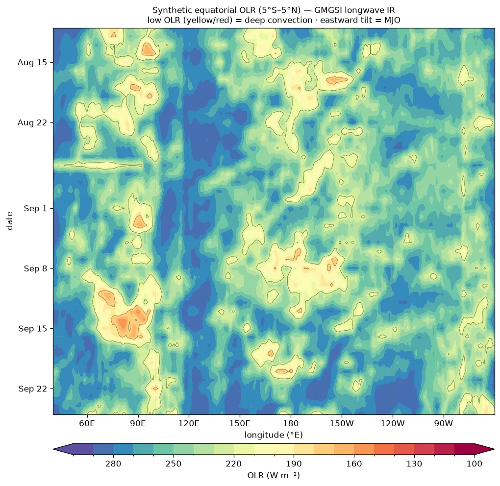
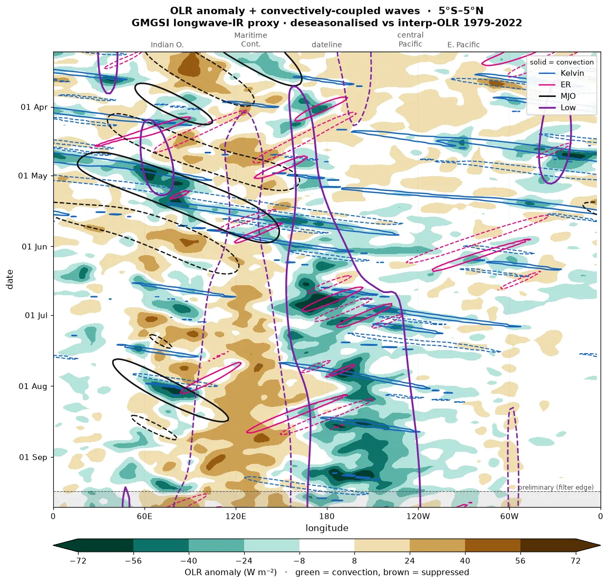
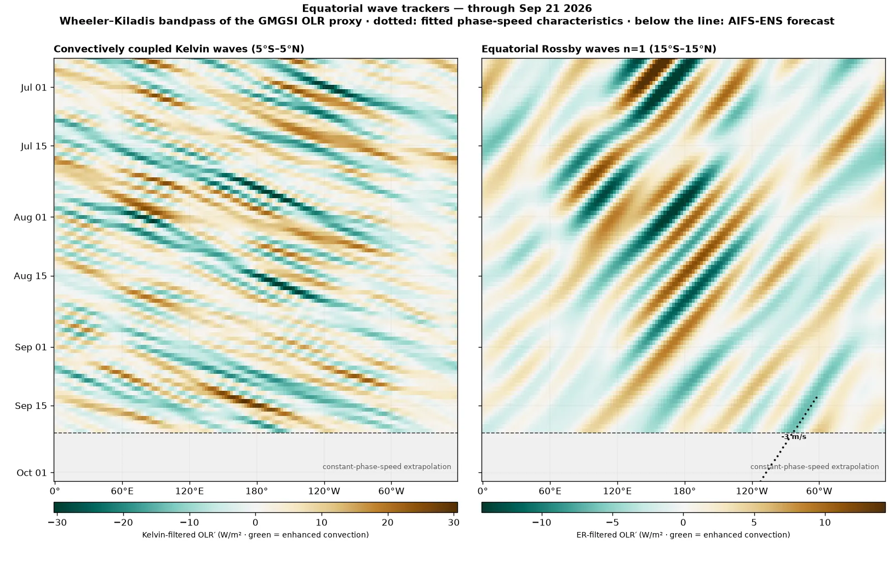

El Niño Monitor
Daily estimates of the Oceanic Niño Index and its warming-era replacement, RONI, ahead of the official monthly numbers — with every Niño region, the tropical background, and the maps behind them. Computed from source data, updated every morning.
Subsurface
Equatorial depth–longitude temperature: the warm reservoir that leads the surface.
Analogs
The current event against 1997, 2015 and 2023 in surface, subsurface and wind.
Forecasts
C3S multi-model seasonal Niño-3.4 outlook and the ensemble SOI forecast.
Atmosphere
Equatorial winds, the Southern Oscillation, and westerly-wind-burst activity.
Today's SST anomaly — OISST
The latest NOAA OISST v2.1 daily field, as anomalies vs 1991–2020 — the raw material behind every index on this page. Global first, then the tropical Pacific with the Niño regions outlined; the daily ONI / tropical-mean / RONI readout is stamped on the maps. Click to enlarge.


Daily ENSO indices — interactive
Every index is a daily area-weighted SST average, so today's value exists today — no waiting for the month to close. Niño-3.4 is the raw material of ONI; the daily RONI subtracts the 20°S–20°N tropical mean and rescales by the CPC/ECMWF σ-factor, so it reads on ONI's ±0.5 °C thresholds; the 90-day mean is the running daily estimate of ONI itself. Click legend entries to add Niño-1+2 / 3 / 4 and the tropical mean; drag to zoom, double-click to reset.

ONI vs RONI — the official convention
Three-month running means, the form CPC publishes. As the whole tropics warm, conventional ONI drifts warm with the background; RONI measures Niño-3.4 against the rest of the tropics and is the cleaner ENSO signal in a warming ocean. When the two disagree, the atmosphere usually sides with RONI. Bars beyond ±0.5 °C are El Niño / La Niña territory.

Beyond ENSO — daily PDO, Indian Ocean Dipole & South Atlantic
The same daily-OISST machinery pointed at the other basins. The PDO is the leading pattern of North Pacific SST variability — here as a daily index: each day's anomaly field (global-mean removed) projected onto the ERSST-derived PDO pattern and calibrated to NCEI's published monthly scale. The Indian Ocean Dipole is the west-minus-east tropical Indian Ocean gradient (DMI); events beyond ±0.4 °C shift Australian and East-African rainfall and often lean on ENSO. The South Atlantic set tracks the Atlantic Niño (ATL3), the Tropical South Atlantic index, and the subtropical dipole (SASD) — the modes that steer Brazilian and West-African rainfall.


Equatorial Pacific at kilometre scale — MUR
NASA JPL's MUR analysis blends infrared, microwave and in-situ SST onto a ~1 km grid — fine enough to resolve the tropical instability wave cusps rolling along the cold-tongue front, the Galápagos wake, and the Peruvian coastal upwelling that the 0.25° OISST maps above smooth over. One frame per day from 1 April 2026 — just before this event's onset (sustained RONI ≥ +0.5 from 21 May) — with a colour range fixed across the whole sequence, so the eastern Pacific visibly warms while the instability waves ripple the front. Click a frame to enlarge it. MUR interpolates under persistent cloud: treat the finest structure as analysis, not direct observation.
Ninety days in motion — the anomaly
The last 90 days of daily anomaly fields, global and tropical Pacific side by side, with the Niño regions outlined. The panel's dropdown also offers the global-mean-removed variant, which strips the uniform background warming and isolates the ENSO pattern.
Ninety days in motion — raw SST
The actual sea-surface temperature field, not the anomaly: the West Pacific warm pool, the equatorial cold tongue and the western boundary currents are visible directly, and the 28–29 °C convective threshold shows where deep convection can root.
Daily SOI: the Current Event vs the Record
150 years of the Southern Oscillation, with today marked against the records. Top: the Bureau of Meteorology's monthly Troup SOI computed one way from 1876 to the present — monthly (light) and 3-month mean (bold), with dotted record lines: the all-time monthly extremes were set in Apr 1905 (−42.6) and Aug 1917 (+34.8). Middle: the consistent daily record — LongPaddock's daily Troup index (10·(ΔP − m)/σ, ΔP = Tahiti − Darwin MSLP, fixed 1887–1989 base), June 1991–present, as 30-day and 90-day running means with their own record max/min lines (1997–98 holds the 30-day minimum; 2010–11 the positive records). Bottom: the last 24 months with raw daily values as bars. Sustained values below −8 are the classic Troup El Niño threshold; the record lines show at a glance how the current excursion ranks in a century and a half of data.

MEI.v2 Daily Nowcast
NOAA PSL's Multivariate ENSO Index v2 is the leading combined-EOF of five tropical-Pacific fields (sea-level pressure, SST, surface zonal and meridional wind, and OLR), but it is published only as an overlapping bimonthly value with a roughly five-week lag. This is a daily nowcast of it: a regression of the published MEI.v2 onto freely-available daily ENSO components (the Niño-3.4 SST anomaly, the Southern Oscillation Index, and the equatorial 850-hPa zonal wind), driven forward each day. The grey steps are the official bimonthly MEI.v2; the red line is the daily estimate, with a ±0.30 leave-one-year-out cross-validation band (the fit reproduces MEI.v2 at R = 0.94). The model is SST-weighted, so during a fast SST-led transition it can lead MEI's slower atmospheric components.

Onset-year analogs: the current year against the major El Niños

Full record since 1980

Out-of-sample skill: the 2015–16 El Niño

Equatorial Convection: Synthetic OLR Hovmöller
A longitude × time Hovmöller of deep convection along the equator. NOAA's interpolated-OLR product ended in 2022, so this derives an OLR proxy in real time from the GMGSI global longwave-IR satellite mosaic: the IR brightness temperature (cold cloud tops) is converted to outgoing longwave radiation, and the 5°S–5°N zonal mean is stacked over time. Yellow to red is low OLR (deep convection); blue is high OLR (suppressed or clear sky). An eastward (top to bottom-right) tilt is the MJO propagating east; convection parked at the dateline reflects the El Niño-shifted warm pool. Newest day at the bottom.

Tropical Pacific: Live IR Satellite Loop
The clouds behind the OLR Hovmöller. NOAA blends GOES-East/West, Himawari and Meteosat into the GMGSI global longwave-IR mosaic on a regular lat/lon grid, so the field is seamless and georeferenced with no stitching or satellite-switch parallax. Cropped to the tropical Pacific with coastlines for orientation, looping the last 72 hours. White is cold cloud tops (deep convection).
South & Central America: Live IR Satellite Loop
The same GMGSI longwave-IR mosaic cropped to the Americas, from southern Mexico and the Caribbean to Tierra del Fuego, across both the eastern Pacific and the tropical Atlantic. Georeferenced with coastlines, looping the last 72 hours. White and colour are cold cloud tops (deep convection).
Tropical South America: Precipitation Accumulation
Accumulated rainfall over Colombia and Brazil from NASA's GPM IMERG (Early run, 0.1° multi-satellite precipitation). Select the window from the Accumulation dropdown: 1 hour, 24 hours, 7 days, 14 days, or month-to-date. Short windows use the half-hourly product; multi-day and month-to-date totals use the daily product. The Magdalena River basin (Colombia) is outlined in white, with Brazilian state borders for orientation.
Tropical South America: Precipitation Anomaly
The departure of recent rainfall from normal: the IMERG accumulation minus its climatological value for the same dates. The climatology is built from IMERG's own 25-year record (GPM IMERG Final daily, 2001–2025), so it is a self-consistent, reanalysis-free, satellite-only anomaly. Select the window (7, 14, 30 days, month-to-date, or the running total since May 1 — the ENSO development season to date) from the dropdown. Green is wetter than normal, brown is drier than normal, white is near normal; the Magdalena River basin (Colombia) is outlined in black.
Tropical Waves and Variability: OLR Hovmöller
A longitude × time Hovmöller of the equatorial outgoing-longwave-radiation (OLR) anomaly, averaged 5°S–5°N around the globe. OLR is derived in real time from the GMGSI longwave-IR mosaic (McIDAS brightness temperature to OLR), with the anomaly taken against NOAA's interpolated-OLR daily climatology (1979–2022). The shaded field is the total anomaly: green is low OLR (deep convection), brown is high OLR (suppressed).
Each overlaid component is isolated from that anomaly field and contoured at its convective (solid) and suppressed (dashed) phase. Kelvin, MJO and equatorial Rossby are Wheeler–Kiladis wavenumber–frequency bandpass filters of the anomaly (2-D FFT in longitude and time): Kelvin is eastward wavenumber 1–14, period 2.5–30 d, equivalent depth 8–90 m; MJO is eastward wavenumber 1–5, period 30–96 d; ER is westward wavenumber 1–10, period 9.7–48 d. Low-frequency is a 120-day Lanczos low-pass in time with the zonal mean removed.

Kelvin & Equatorial Rossby Wave Trackers
Each wave isolated in its own panel — the Kelvin-filtered (5°S–5°N) and equatorial-Rossby-filtered (15°S–15°N, n=1) OLR anomaly as shading — with the active enhanced-convection packets tracked: the band's recent phase speed is fitted by day-to-day lag correlation of the filtered field, today's packet centres are located, and each characteristic is extrapolated ahead at that speed (dotted line). Below the dashed today-line the shading is a true forecast: the AIFS-ENS ensemble-mean precipitation (as a pseudo-OLR, standardized against an ERA5 1991–2020 band climatology) is appended to the record and run through the same Wheeler–Kiladis filter, so the wave field continues with the model's dynamics — where the dotted constant-speed line and the model streaks agree, confidence in the arrival time is high.

About these plots
This monitor pulls together a range of ENSO and tropical-climate diagnostics, each computed from public source data (not screen-scraped) and regenerated automatically on its own schedule, then committed to the site's GitHub repository. Daily: the global and tropical-Pacific SST anomaly maps, RONI, and indices (NOAA OISST); the equatorial subsurface-temperature cross-section (NOAA/PMEL TAO/TRITON moorings); observed equatorial surface winds (Copernicus Marine scatterometer / ASCAT); and, from the ECMWF AIFS-ENS / IFS-ENS ensembles, the equatorial wind Hovmöller and the Southern Oscillation Index forecast. Monthly: the C3S multi-model Niño-3.4 seasonal forecast — the Copernicus multi-system seasonal ensemble (ECMWF, UK Met Office, Météo-France, DWD, NCEP, ECCC/CanSIPS and the Australian BoM), shown as both traditional ONI and RONI, each model anomalized against its own 1993–2016 hindcast. Weekly: the El Niño analog comparisons against 1997, 2015 and 2023. RONI is computed directly (the cosine-latitude-weighted Niño-3.4 anomaly minus the 20°S–20°N tropical mean, 3-month smoothed) rather than fetched, then rescaled by the per-calendar-month σ(ONI)/σ(relative) factor (NOAA-CPC / ECMWF method) so it stays in °C and comparable to ONI (1991–2020 OISST).
Data & acknowledgments: ECMWF AIFS-ENS and IFS-ENS forecasts (wind Hovmöller, SOI) are used under the ECMWF open-data licence (CC BY 4.0, © ECMWF). Climatologies and the reanalysis-based fields use ERA5 from the Copernicus Climate Change Service (C3S) / ECMWF; generated using Copernicus Climate Change Service information, and neither the European Commission nor ECMWF is responsible for any use of the data. The C3S multi-model Niño-3.4 seasonal forecast is generated using Copernicus Climate Change Service information from the CDS seasonal multi-system (ECMWF, UK Met Office, Météo-France, DWD, NCEP, ECCC and the Australian BoM). Other sources: NOAA OISST & PSL, NOAA/PMEL TAO/TRITON, Copernicus Marine Service (ASCAT winds), and the Australian Bureau of Meteorology / Queensland Govt LongPaddock (SOI).
Source on GitHub.